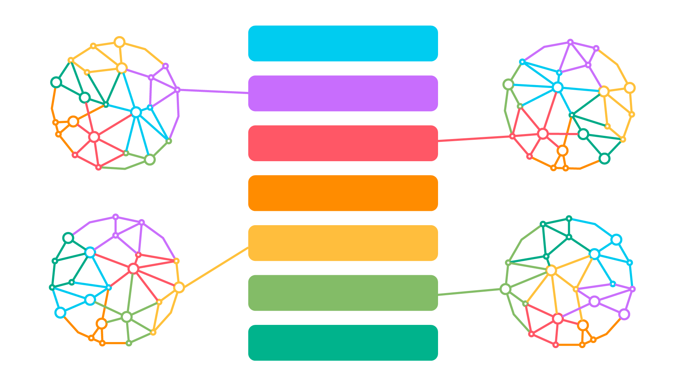

About this site
Welcome to the Learning Patterns website. This site was created and developed by Tim Klapdor - currently a Manager of Educational Design at the University of Adelaide. Over the last decade Tim has been working in the domain of learning design and course development, leading and implementing a variety of course and program development intiatives speficically for online delivery. One of the recurring issues in learning design is the lack of a vocabulary, a language that focuses on the learning and the learner experience rather than pedagogy and the teacher.
The day-to-day work of Learning Design centres around learning, but it's often in an indirect way. We help create and build resources for learning, assessments of learning, instructions and activities that promote learning — but at the end of the day, the act of learning is not in our control.
Individual students do the learning. Each person learns in their own way. Schema Theory helps to explain this by proposing that our brains function as a map of connections based on our personal experiences and exposure to input. So, we all develop our own schema, linking information with our perceptions, physicality, locations, relationships, sights, smells and sounds.
Learning is the ability to take new information and assimilate it into our existing schema to make connections between things. In order to learn, we have to form a connection. Learning is about how we form new connections. How do we connect new concepts, skills, information, and knowledge to what we already know?
Diana Laurillard helped introduce the concept of Learning Types in her conversational framework, mapping the dialogic relationship between teachers and students. Through a range of collaborative efforts, these types evolved into these seven Learning Types:
| Assimilative | Learning through presented information |
| Investigative | Learning by seeking information |
| Discursive | Learning by engaging with other perspectives |
| Formative | Learning by trying |
| Productive | Learning by creating artefacts |
| Evaluative | Learning through feedback |
| Social | Learning with others |
These seven learning types provide different ways individual learners can to connect to someone's schema. They also shift perspectives from the teacher and their instruction to the learner and their experience. These learning types work amazingly well in planning and designing courses and experiences, and they work incredibly well as diagnostic tools.
We also found it helpful to align the Learning Types to activities, what the students will be doing and spending time in the course.
| Assimilative | Content | Creating information for the student to learn from. |
| Investigative | External Resources | Curating information for the student to engage with. |
| Discursive | Discussion | Creating opportunities to share and engage with different perspectives. |
| Formative | Practice | Providing opportunities for learners to try things out. |
| Productive | Assessment | Students produce artefacts as evidence of learning. |
| Evaluative | Review | Creating opportunities to learn from reflection and feedback. |
| Social | Interactive | Creating opportunities to learn from others. |
We noticed almost immediately that a good learning experience does not consist of a singular learning type but is constructed from combining them and moving through them as a sequence or a lesson.
A well-constructed lesson provides multiple connection points and opportunities to connect the lesson to the student's prior knowledge or experience. Because everyone's schema is unique, the more diversity, the greater the chance of creating connections.

What do you do once you have chosen to develop a specific learning type? You need something more granular. That is where Learning Patterns come in. The idea of a Pattern Language comes from Christopher Alexander, an architect who was looking to empower his clients to define the features and functions of a space. What he realised was that there were common "patterns" that could describe these features and functions and be reused to solve individual design problems.
And that's where you find yourself today — a library of common patterns related to each of the Learning Types so that we could help develop and scaffold the creation of activities.
All and any feedback is welcome! Feel free to get in touch via Email or Mastodon.